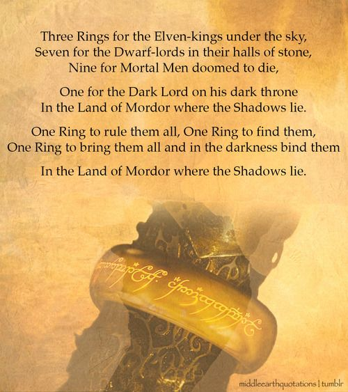
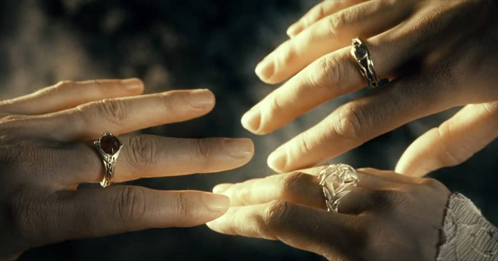
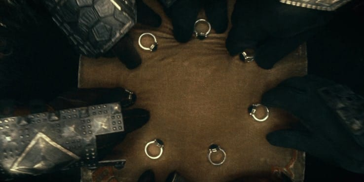
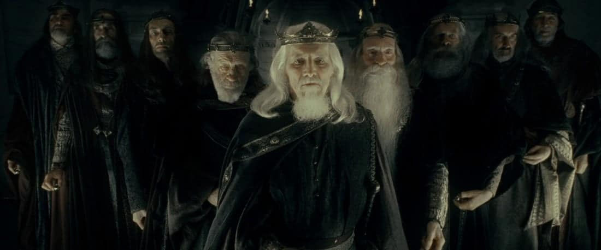

Sauron's One Ring, forged in the fires of Mt. Doom as a master controller for the other 19, is, of course, the most famous, most powerful, and most valuable Ring of Power.
Sauron had to pour a considerable percentage of his own power into the melting pot in order to create a symbiotic relationship between the item and its master.
Sauron could never be fully destroyed while the Ring was remained on his finger, but he couldn't wield his full Maia might without it.
Sauron used the One Ring to bring Middle-earth to its knees, according to The Lord of the Rings, until Isildur severed the weapon from his hand during the Last Alliance of Elves and Men. Isildur fought valiantly against the Ring's allure before deciding to preserve it, although the next chapter of the Ring's narrative is less well known. Isildur concluded Elrond was probably right about the Ring being bad news after many years of sorrow and effort, and set out to deliver it to the elven lord himself.
Isildur's company was beset by orcs during the journey, and though the King managed to slip away using the Ring's invisibility, it betrayed him by falling from its owner's finger into the River Anduin, exposing Isildur to orc arrows.
The One Ring was constructed in secret by Sauron from his Mordor fortress, but the other 19 were produced openly by the elves - albeit with the help of an evil guiding hand. Sauron, Morgoth's greatest lieutenant, spent 1500 years rebuilding his magical strength and military prowess after Morgoth (Middle-original earth's villain) fell at the end of the First Age, turning Mordor into a stronghold of evil. Sauron infiltrated the Elves of Eregion as part of his larger goal to rule all species, donning a "fair" disguise and dubbing himself Annatar. Sauron provided Eregion magical knowledge and pushed them toward constructing the Rings of Power while operating in the shadows and creating discontent among the already-fractured elven households.

Celebrimbor, the best of the smiths, complied and personally created Narya, Nenya, and Vilya, a trio of mighty rings. The Elves' Rings of Power were not directly under Sauron's control because Celebrimbor alone created them, and thus lacked the same corrupting properties that other Rings of Power instilled upon their unfortunate bearers. Despite this, the Dark Lord's One Ring had an effect on all three of them. Despite Tolkien's vague descriptions of their abilities, each elven Ring of Power has its own set of advantages. Narya specialises in flame magic and grants the bearer the ability to inspire others and defy exhaustion. Nenya could be used as a shield and ward against evil forces. Vilya, the strongest of the three, is suspected to possess the same gift, but with an added affinity for controlling water.
Gil-Galad, the Elves' High Ruler, who is briefly seen during The Fellowship of the Ring's flashback fight, originally held Narya and Vilya. Narya was given to Círdan the shipwright, one of Middle-oldest earth's elves, by Gil-Galad, but when Círdan saw Gandalf arrive, he believed the wizard would make greater use of it. Narya is carried by Gandalf throughout the Lord of the Rings trilogy. Meanwhile, Gil-Galad handed Vilya to Elrond long before the events of The Hobbit and The Lord of the Rings, and Galadriel is constantly wearing the third Ring, Nenya. After Frodo destroys the Ruling Ring, all three become inert - beautiful to look at, but as useless in warfare as Sam Gamgee's cherished marrow.
The famous Lord of the Rings rhyme implies that Sauron always meant to distribute his Rings of Power throughout Middle-diverse earth's races, but the charming verse doesn't convey the whole tale.
Sauron had hoped to use all 19 Rings of Power to corrupt the Elves, but after crafting the One Ring and putting his evil plan into action, his targets swiftly realised their folly and removed their Rings. Sauron then struggled to regain them, and while the Elves were able to hide the three most powerful (Narya, Nenya, and Vilya), the rest were mostly reclaimed. The Dark Lord only gave the Dwarves seven Rings of Power and the kings of Men nine Rings of Power after being rebuffed by flowery forest folk.
Tolkien wrote the least about the Dwarves' seven Rings of Power. Sauron, like the Elves, let the Dwarf-lords wear his gifts before attempting to corrupt them with the One Ring. He failed once more, this time because the Dwarves were too tough and tenacious to be subdued. Rather than succumbing to Sauron's control, dwarf ring-bearers amassed vast wealth, only to be consumed by it, setting in motion the events of The Hobbit. Tolkien's literature only mentions one of the Seven: the Ring of Thrór, which was given to Celebrimbor rather than Sauron.
Given that dragons were attracted to the Dwarves' Rings of Power, it's not surprising that four of the Seven were melted by the animals' burning breath. Following his rise to power, Sauron was able to recover the last three, whereupon he boldly attempted to deal with the Dwarves, offering the trio in exchange for their devotion. They responded by telling him to stick that offer up his Caradhras!
With the nine human kings on whom Sauron bestowed the Rings of Power, he finally tasted victory.
Sauron's chosen Men-folk ate up his tempting gifts, falling completely to the One Ring's invisible tentacles, although being less magical than Elves and less resistant than dwarves. The nine kings gained power, agelessness, and wealth, just as the Dark Lord promised... but if they'd read the fine print first, they would've realised Sauron's price was their tie to the mortal realm.
The kings gradually faded into oblivion, remaining only as ghostly wraiths subject to Sauron's will and reliant on him for strength. The Nazgûl, or Ringwraiths, were the name given to these phantom slaves who continued to obey their lord until they were finally defeated.
The identity of the Nazgûl are undisclosed, with Tolkien only naming the Witch-king of Angmar and Khamûl the Easterling. The fate of the nine Rings of Power that are reserved for Men is similarly unknown. The pieces themselves were never located, so they either stayed with Sauron in Mordor or with their respective kings' physical bodies - wherever those were housed.
"Top of page"